hXDP: Efficient Software Packet Processing on FPGA NICs
This page was written by an AI model to give a high-level overview of the paper. Please check the paper for detail: USENIX.
FPGA-based NICs are attractive for offloading packet processing from server CPUs, and unlike fixed ASIC SmartNICs they can also host other application-specific accelerators on the same chip, which matters in space- and power-constrained deployments such as 5G base stations or edge sites. The obstacle is that FPGAs are hard to program, and prior work that makes FPGA NIC programming easier (P4-to-FPGA toolchains, FlowBlaze's match-action pipelines) typically assumes the FPGA is dedicated to networking, implementing each function as a pipeline that is "unrolled" in hardware and that consumes resources proportional to the function's complexity. That leaves little of the FPGA free for anything else, and it requires learning a new programming model.
The paper instead targets Linux's eXpress Data Path (XDP), the eBPF-based in-kernel packet-processing hook already used in production (load balancing, DDoS filtering) by a large community of Linux developers. Running XDP's eBPF bytecode directly on an FPGA is hard because eBPF assumes a sequential, high-clock-rate RISC-like register machine: FPGAs run 5 to 10 times slower per clock and favor wide parallel hardware, not fast iteration. A back-of-envelope estimate in the paper shows a naive one-instruction-per-cycle FPGA executor of a 71-instruction stateful firewall would hit only about 2.8 Mpps at 156 MHz, roughly 2 to 3 times slower than a single x86 core. Reusing superscalar techniques (speculation, runtime reordering) to close that gap is not viable either, since the hardware cost of runtime instruction-level-parallelism detection grows exponentially with the instruction window.
hXDP's key idea is to move parallelism extraction from runtime to compile time, and to shrink the number of instructions a program needs by giving the hardware targeted, fixed support for common eBPF patterns. A custom compiler removes instructions whose job can instead be guaranteed by dedicated hardware (memory bounds checks, variable zero-ing), introduces an extended ISA with 3-operand arithmetic, 6-byte loads/stores sized for Ethernet MAC addresses, and a single parametrized exit instruction, and then statically schedules the remaining instructions into Very Long Instruction Word (VLIW) "rows" using a data-dependency analysis based on the Bernstein conditions.
The resulting hXDP hardware is a self-contained FPGA IP core: a packet queue and buffer feed a VLIW soft-processor called Sephirot (4 execution lanes, 4 pipeline stages) which executes the extended-ISA instructions, calling out to dedicated hardware modules for XDP's helper functions and maps. Compiled, unmodified XDP bytecode runs on this core without crossing the PCIe bus for packets fully handled on the NIC.
On a NetFPGA board (Xilinx Virtex-7, 156.25 MHz) the hXDP core uses about 9.91% of the FPGA's logic and 2.09% of its registers (18.53% and 7.3% including a full reference NIC design). Running a real-world stateful firewall, it reaches 6.53 Mpps, only 12% slower than a single x86 core at 3.7 GHz and 55% faster than the same core at 2.1 GHz, with roughly 10 times lower packet forwarding latency. On Facebook's Katran load balancer it is 38% slower than x86 at 3.7 GHz but still 8% faster than x86 at 2.1 GHz, a frequency closer to what many datacenter CPUs actually run at.
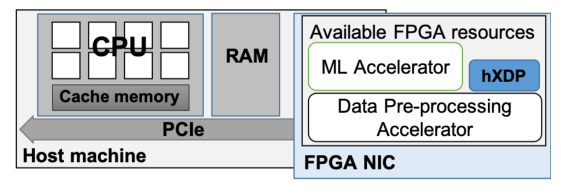
Key takeaways
- hXDP runs unmodified, compiled Linux XDP/eBPF programs on an FPGA NIC, instead of defining a new hardware-specific programming model.
- Its compiler removes kernel-verifier-only instructions, extends the eBPF ISA (3-operand ops, 6B load/store, parametrized exit), and statically parallelizes remaining instructions into VLIW schedules using Bernstein-condition data-dependency analysis.
- The hardware is a small, fixed-size, iterative VLIW core (Sephirot, 4 lanes) plus dedicated helper-function and maps modules, not a per-program pipeline that is unrolled on the FPGA.
- It uses about 15 to 19% of NetFPGA logic resources regardless of the loaded program, leaving most of the chip free for other accelerators, and supports dynamic program reloading without reflashing the FPGA.
- It matches or beats a single x86 CPU core clocked above roughly 2 GHz on real applications and short programs, with much lower latency, but is slower than x86 on long programs and on packets that must reach the host.
From eBPF bytecode to a parallel FPGA executor
XDP and eBPF background, why iterative execution is slow on FPGA, the compiler optimizations that shrink and parallelize programs, the Sephirot hardware core, and the NetFPGA prototype.
1 · Background: XDP and eBPF
XDP lets programmers attach a program at the NIC driver level, so it runs before a packet reaches the Linux network stack, giving high performance while still letting selected packets fall through to the kernel. XDP programs are written in a restricted C, compiled to eBPF bytecode, and checked by an in-kernel verifier before being attached. The eBPF virtual machine has 11 64-bit registers (r0 for return values, r1-r5 for call arguments, r6-r9 preserved across calls, r10 the stack frame pointer) and over 100 fixed-length 64-bit instructions covering 32- and 64-bit ALU, branch and memory operations. Programs can call helper functions for operations such as checksums and protected memory reads, and can read and write maps, kernel memory regions configured at compile time as arrays, hash tables, etc., which are the only way to keep state across invocations or share data with user space.
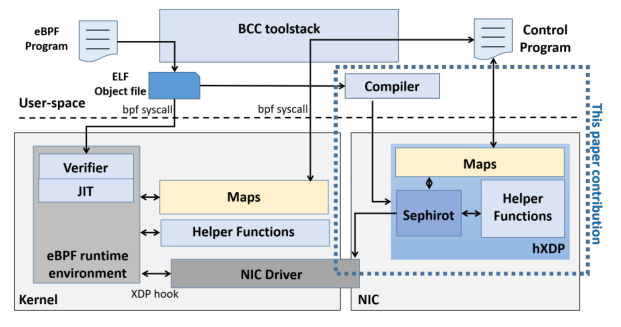
2 · Why a direct FPGA port of eBPF is slow
eBPF's ISA and execution model were designed for a high-clock sequential CPU, not for FPGA logic. A naive FPGA executor that runs one eBPF instruction per cycle, applied to a 71-instruction stateful firewall example, gives an optimistic upper bound of about 2.8 Mpps at a typical FPGA NIC clock of 156 MHz, versus a measured 7.4 Mpps for the same program on one x86 core at 3.7 GHz (including OS and PCIe overheads). The gap exists even though the CPU pays overheads the naive FPGA estimate ignores. Closing it with CPU-style superscalar techniques, extracting instruction-level parallelism at runtime through speculation or out-of-order execution, is impractical on FPGA because the required detection hardware grows exponentially with the number of instructions considered for parallel issue, which rules out reusing general-purpose soft-core designs such as RISC-V cores.
3 · Instruction reduction
Many eBPF instructions exist only to satisfy the in-kernel verifier and have no equivalent need in a dedicated, purpose-built executor. The paper removes two classes directly, replacing them with hardware guarantees: memory boundary checks (needed before any pointer dereference into the packet buffer, costing about 3 instructions per check, repeated for each protocol header parsed) and variable zero-ing (clearing newly declared variables, about 4 instructions in the example firewall). The FPGA executor instead performs bounds checking in hardware and resets the stack and registers automatically at program start.
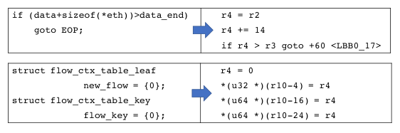
4 · ISA extensions
Because the target is a purpose-built executor rather than a JIT target for x86, the compiler is free to define a non-standard ISA. It extends eBPF three ways: three-operand instructions, replacing two two-operand eBPF instructions with one; 6-byte load/store instructions, sized for an Ethernet MAC address, which often halve the instructions needed to read or write addresses; and a parametrized exit instruction that encodes the forwarding decision (DROP, TX, etc.) directly in the exit instruction instead of first moving a value into r0. The last extension saves only one instruction per program at the bytecode level, but it also enables a hardware early-exit optimization described below.
5 · Instruction-level parallelism at compile time
The compiler checks the three Bernstein conditions between pairs of instructions, two instructions can run in parallel only if neither's inputs overlap the other's outputs and their outputs do not overlap each other, and schedules independent instructions into the same VLIW row. Scheduling is done per basic block in the program's control-flow graph, and the compiler also looks ahead into "control equivalent" blocks (blocks guaranteed to execute whenever the current block does) to find extra instructions, often branches, that can fill otherwise empty slots in the current schedule. Sweeping the target lane count from 2 to 8 shows the number of resulting VLIW instructions dropping sharply up to 3 lanes, with a fourth lane giving a further 5% reduction and diminishing returns beyond that; wider schedules also make physical register assignment harder, since more live symbols must fit in the fixed eBPF register file. The paper settles on 4 parallel lanes as the balance point.
6 · The compiler pipeline
- CFG construction. A forward scan of the eBPF bytecode identifies basic blocks and the branches/jumps connecting them, building the control-flow graph (CFG).
- Peephole optimizations. Per basic block, removal of verifier-only instructions and substitution of instruction groups with the extended ISA's equivalents (Sections 3 and 4 above).
- Data flow dependencies. An iterative analysis over the CFG computes each block's input, output, defined and used symbols, producing per-instruction data-dependency graphs (DDGs).
- Instruction scheduling. Using the CFG and DDGs plus the target's lane count and constraints (for example, only one helper-function call per row), the compiler fills schedule rows block by block, pulling in enabled instructions from control-equivalent blocks to fill gaps.
- Physical register assignment. Registers with fixed meaning (r0, r1-r5, r10) are assigned first; remaining conflicts against the third Bernstein condition are resolved by renaming registers and propagating the rename to dependent instructions.
7 · The Sephirot hardware core and its neighbors
The hXDP IP core has five components, all in one clock domain: a Programmable Input Queue (PIQ) buffering incoming frames; an Active Packet Selector (APS) that assembles a full packet into an internal buffer and exposes byte-aligned, 4-lane-parallel read/write access (using a byte-addressed difference buffer so single-byte writes do not require a full frame read-modify-write); the Sephirot VLIW processor; a Helper Functions module implementing XDP helpers (such as checksums) directly in hardware behind a shared helper bus, so only one helper call can issue per cycle; and a Maps module that reconfigures a shared FPGA memory area at program-load time into the maps (arrays, hash tables) the loaded program declares, reachable both directly from Sephirot and structurally through the Helper Functions module.
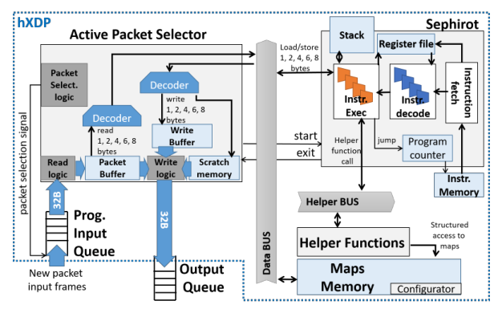
Sephirot itself is a 4-stage pipeline (instruction fetch, decode, execute, commit) with 4 parallel execution lanes, a 512-byte stack and the eBPF register file, matching the eBPF virtual machine's memory model one-to-one. Each VLIW instruction fetched contains up to 4 extended eBPF instructions, statically assigned to lanes by the compiler; the three following stages run in parallel per lane, with sub-units for arithmetic/logic, memory access (stack, packet buffer, maps) and control flow (branches, helper calls). Execution starts when the APS signals a new packet and ends when an exit instruction is committed, at which point the forwarding decision is handed back to the APS for packet emission while the next packet is already being read in.
8 · Pipeline-level optimizations
- Early processor start. Sephirot begins reading packet data before the full packet has arrived in the APS buffer, pausing only on the rare access to not-yet-received bytes; in practice XDP programs read from the start of the packet, so this mostly hides execution time behind transfer time for larger packets.
- Program state self-reset. The stack and registers are reset in hardware at program start, for free, removing the need for the zero-ing instructions discussed in step 3 and incidentally improving security against stale-state bugs.
- Data-hazard reduction via per-lane result forwarding. Because Sephirot prefetches operands and memory locations during decode, two dependent instructions issued back to back would otherwise read a stale value; the compiler instead schedules dependent instructions onto the same lane, where results are forwarded directly, avoiding a pipeline stall.
- Parallel branching. XDP programs often chain several branches in sequence (for example, a protocol-dispatch switch during header parsing). Sephirot's lanes evaluate several branch instructions in the same cycle, and a static priority order set by the compiler picks the one that fires if more than one branch is taken.
- Early processor exit. Because the exit instruction is recognized at fetch time, and the forwarding action is now embedded in the parametrized exit instruction itself (step 4), the pipeline can stop 3 cycles early instead of writing a value to r0 and draining the pipeline.
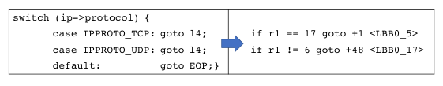
9 · Implementation and resource footprint
The prototype targets a NetFPGA board (Xilinx Virtex-7, four 10 Gb ports), using the board's standard 32-byte frame size and 156.25 MHz clock. The hXDP IP core alone uses about 9.91% of the FPGA's logic slices, 2.09% of registers and 3.4% of block RAM (excluding the variable memory needed for maps); Sephirot and the APS are the largest consumers, as the most complex modules, while a hashmap-lookup helper function adds only a minor amount of logic for a meaningful performance benefit. Adding the NetFPGA reference NIC design around the core brings total usage to about 18.53% logic, 7.3% registers and 14.63% BRAM, still leaving most of the FPGA free for other accelerators. Programs are dynamically loaded without reflashing the FPGA bitstream, unlike pipeline-based alternatives such as FlowBlaze or P4-to-FPGA toolchains. Evaluation results, including throughput, latency and resource-usage comparisons against x86 and the Netronome NFP4000, are covered in the Evaluation tab.
Evaluation
Compiler-level instruction counts, then hardware throughput and latency against x86 server cores and a Netronome SmartNIC.
The paper evaluates the hXDP compiler's effect on instruction counts and parallelism, then measures the NetFPGA hardware prototype's throughput and latency against an x86 server running native Linux XDP and, for microbenchmarks only, a Netronome NFP4000 SmartNIC with partial eBPF offload support.
| Aspect | As stated in the paper |
|---|---|
| FPGA platform | NetFPGA (4x10GbE, Xilinx Virtex-7), hXDP clocked at 156.25 MHz, 32B frame size |
| CPU baseline | Intel Xeon E5-1630 v3, tested at 1.2, 2.1 and 3.7 GHz; Intel XL710 40GbE NIC with i40e driver; Linux v5.6.4 |
| SmartNIC baseline | Netronome NFP4000: 60 microengines at 800 MHz, limited eBPF/XDP offload support (used only for microbenchmarks) |
| Workloads | Real applications: a stateful simple firewall (71 instructions) and Facebook's Katran load balancer (268 instructions); Linux's own XDP examples (xdp1, xdp2, xdp_adjust_tail, router_ipv4, rxq_info drop/tx, tx_ip_tunnel, redirect_map) |
| Traffic generator | DPDK packet generator, up to 40 Gbps, 64B packets on a single flow unless stated otherwise, back-to-back connection; latency via hardware timestamping of round-trip time |
| Scope | Only packets processed entirely on the NIC are measured; tests requiring PCIe transfer to the host are explicitly excluded |
Compiler optimizations cut instructions, by different amounts per program
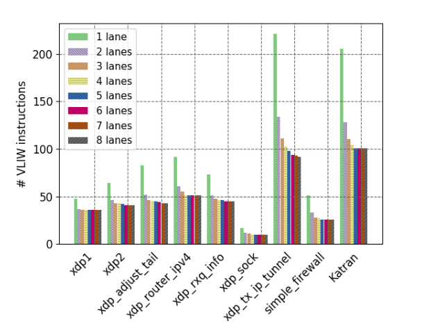
What it shows. For each tested program, the reduction in eBPF instruction count relative to the unoptimized original is broken down by which optimization caused it (instruction removal, 6B load/store, parametrized exit, etc.). The contribution is program-dependent: 6B load/store gives xdp_adjust_tail an 18% reduction because it manipulates 6-byte fields heavily, while bounds-check removal accounts for 19% of simple_firewall's instructions, which parses three headers. Parametrized exit gives a 5 to 10% reduction in instruction count, but since only one exit instruction ever actually executes per program run, its runtime impact is smaller than the static count suggests.
What to take from it. No single optimization dominates across programs; the gains come from matching specific instruction patterns (bounds checks, zero-ing, 6-byte accesses) that recur differently depending on what a program parses and does.
Combined with parallelization, the final VLIW program is 2 to 3 times smaller than the original
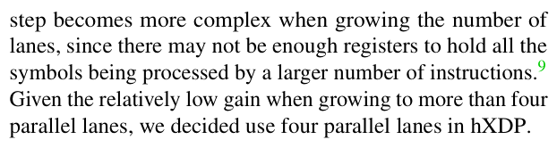
What it shows. The final count of VLIW instructions (rows, each holding up to 4 eBPF instructions) after all compiler optimizations, with the gain from code movement (pulling instructions from control-equivalent blocks) shown separately from parallelization, and the corresponding x86 JIT-compiled instruction count shown for comparison. Combining the optimizations does not sum their individual gains, since each one changes the instructions later optimizations see.
What to take from it. Overall, hXDP's compiler produces VLIW schedules that are often 2 to 3 times smaller than the original eBPF program, while the x86 JIT compiler typically grows the instruction count instead, partly from the overhead of running on a shared, general-purpose executor (for example, extra instructions for helper calls).
hXDP beats x86 cores above roughly 2 GHz on real applications
What it shows. Throughput in Mpps for the simple firewall and Katran load balancer, on hXDP versus x86 at 1.2, 2.1 and 3.7 GHz. The simple firewall reaches 6.53 Mpps on hXDP, 12% slower than x86 at 3.7 GHz but 55% faster than x86 at 2.1 GHz. Katran reaches a point where hXDP is 38% slower than x86 at 3.7 GHz but 8% faster than x86 at 2.1 GHz; the paper attributes the weaker relative result to Katran's longer program, which favors a CPU's much higher clock frequency.
What to take from it. hXDP is competitive with, or faster than, CPU cores clocked near 2.1 GHz, which the paper notes is close to the frequencies used in many large datacenter deployments that favor many lower-clocked cores over fewer high-clocked ones. Longer programs erode hXDP's advantage because its 156 MHz clock has no way to compensate as instruction count grows.
Roughly 10x lower forwarding latency than the x86 path
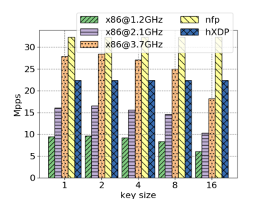
What it shows. Packet forwarding latency across different packet sizes, measured as round-trip time via hardware timestamping, for hXDP, x86 and (for a forwarding-only program) the Netronome NFP4000.
What to take from it. hXDP provides about a 10 times lower forwarding latency than the x86 server path across all tested packet sizes, because it avoids the PCIe bus crossing and the Linux driver/software stack entirely; it also beats the NFP4000 on latency, especially for smaller packets. The paper notes that differences between XDP programs on hXDP itself are small relative to this gap, since each VLIW instruction takes roughly 7 ns, so tens of instructions of difference between programs shift latency by well under a microsecond.
Which kind of Linux XDP example benefits from NIC-side execution
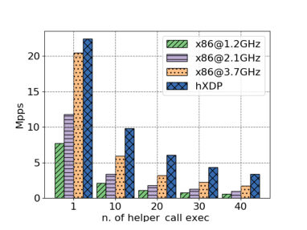
What it shows. Throughput for the Linux kernel's own XDP example programs (xdp1, xdp2, xdp_adjust_tail, router_ipv4, rxq_info, tx_ip_tunnel, redirect_map) on hXDP versus x86 at different clocks.
What to take from it. Three patterns emerge. Programs that forward or redirect packets entirely on the NIC favor hXDP, since the x86 path pays an extra PCIe round trip to send the packet back out; here hXDP generally matches or beats an x86 core at 2.1 GHz. Programs that always drop packets (an uncommon case, e.g., traffic statistics from a tap) favor x86 except at low CPU frequencies like 1.2 GHz. Long programs, such as the 283-instruction tx_ip_tunnel, favor x86's high clock frequency, mirroring the Katran result.
Baseline DROP/TX/redirect throughput, and the cost of disabling exit optimizations
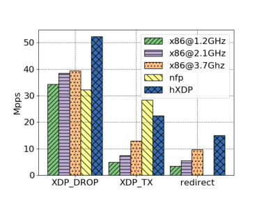
What it shows. Throughput for three minimal programs (XDP_DROP, XDP_TX which swaps MAC addresses and retransmits, and redirect which sends out a different port via a helper call) on hXDP, x86 at 3.7 GHz, and the NFP4000. For XDP_DROP: hXDP 52 Mpps, x86 38 Mpps, NFP4000 32 Mpps; disabling the parametrized/early-exit optimization drops hXDP to 22 Mpps. For XDP_TX: hXDP 22.5 Mpps, x86 12 Mpps, NFP4000 over 28 Mpps. For redirect: hXDP 15 Mpps, x86 11 Mpps; the NFP4000 does not support the redirect action and is not measured.
What to take from it. On the shortest programs, avoiding PCIe and software overhead gives hXDP a large lead over x86, and the early-exit/parametrized-exit hardware optimization alone more than doubles DROP throughput (22 to 52 Mpps). The NFP4000 wins on TX because the test only forwards bare headers, a case well suited to its many small cores, but it lacks full redirect support and could not run the researchers' complete eBPF programs due to limited eBPF offload support.
Dedicated hardware helper functions outperform software helper calls
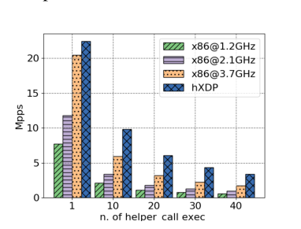
What it shows. Forwarding throughput when a program calls a helper function performing an incremental checksum calculation between 1 and 40 times, on hXDP versus x86.
What to take from it. Because hXDP implements helper functions as dedicated FPGA hardware rather than software subroutines, it shows a clear throughput advantage over x86 as the number of helper calls grows, suggesting that offloading programs with expensive, helper-heavy computation is one of the more favorable use cases for hXDP.
Static compile-time scheduling matches x86's runtime instruction-level parallelism
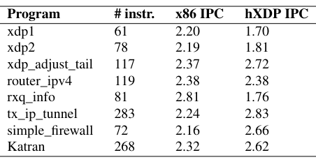
What it shows. For each tested program: instruction count, the x86 core's measured runtime instructions-per-cycle (IPC) rate, and hXDP's static IPC (eBPF instructions per VLIW row). x86 IPC ranges from about 2.16 to 2.81 across programs; hXDP's static IPC ranges from about 1.70 to 2.83, exceeding x86 IPC on tx_ip_tunnel, simple_firewall and Katran.
What to take from it. hXDP's compile-time VLIW scheduling achieves a level of instruction parallelism often comparable to, and on some programs higher than, the parallelism an out-of-order superscalar x86 core extracts at runtime with far more complex hardware. The paper cautions that x86 IPC here is a coarse estimate, since the measured core also runs OS services around the eBPF virtual machine and its IPC is affected by memory access latency, which matters more at high clock frequencies.
FAQ
Q·What is XDP, and why does the paper target it specifically?▾
XDP (eXpress Data Path) is a Linux kernel hook that runs small, verified eBPF programs at the NIC driver level, before packets reach the normal network stack, and it is already used in production for tasks like load balancing and DDoS filtering. The paper targets it so that offloading requires no new programming model: an unmodified, already-deployed XDP program can be compiled by hXDP's toolchain and run on the FPGA instead of, or alongside, the kernel.
Q·What is eBPF, concretely?▾
An in-kernel virtual machine with 11 64-bit registers and a fixed instruction set of over 100 64-bit instructions covering arithmetic, branches and memory access, originally designed for safe, sandboxed execution inside the Linux kernel, with a verifier checking programs for safety (no unbounded loops, bounded stack, no dynamic allocation) before they run.
Q·Why not just use a many-core SmartNIC like the Netronome NFP4000 instead?▾
SmartNIC cores dedicate most of their silicon to network processing and run a many-core architecture that is efficient for short, header-only operations, but the paper notes the NFP4000's eBPF/XDP support was partial and could not run its full real-world programs, and on some operations (like redirect) it lacks support entirely. hXDP's goal is different: provide full XDP compatibility while leaving most of the FPGA free to also host non-networking accelerators.
Q·How is this different from FlowBlaze or P4-to-FPGA approaches?▾
Those approaches compile a program into a dedicated hardware pipeline on the FPGA; changing the function usually means loading a new bitstream, and resource use grows with the function's complexity (FlowBlaze uses about 16% of NetFPGA logic per pipeline stage, and more complex functions need several stages). hXDP instead runs programs on a fixed-size, iterative VLIW processor that can be reloaded dynamically without reflashing, at a fixed resource cost regardless of program complexity. The tradeoff is throughput: for the simple firewall, FlowBlaze reaches about 60 Mpps against hXDP's 6.5 Mpps at the same 156 MHz clock, because its pipeline exploits hardware parallelism that a general sequential (if parallel-lane) executor cannot match.
Q·Do existing XDP programs need to be rewritten for hXDP?▾
No. hXDP compiles the same compiled XDP bytecode that would otherwise be JIT-compiled for the kernel's in-kernel eBPF interpreter or run natively; the program itself is unmodified. The user (or an orchestration system) does choose where it runs, since hXDP is not a transparent offload: unlike running on the host CPU, running on the NIC has different performance characteristics the programmer should be aware of, similar to being aware of NUMA placement.
Q·Why use a VLIW design instead of letting the FPGA extract parallelism at runtime the way a superscalar CPU does?▾
Runtime instruction-level-parallelism detection (as in superscalar CPUs) requires hardware whose complexity grows exponentially with the number of instructions considered together, which is too expensive in FPGA logic. hXDP instead has its compiler compute a static VLIW schedule once, at compile time, so the hardware only has to execute a fixed number of lanes per cycle with no runtime scheduling logic.
Q·What is Sephirot?▾
Sephirot is the name of hXDP's VLIW soft-processor core: a 4-stage pipeline (fetch, decode, execute, commit) with 4 parallel execution lanes, a 512-byte stack and the eBPF register file, which executes the compiler-scheduled extended-ISA instructions directly against the packet buffer, maps and helper-function modules.
Q·How much of the FPGA does hXDP actually use, and why does that matter?▾
The core alone uses about 9.91% of logic, 2.09% of registers and 3.4% of block RAM on the tested NetFPGA (Virtex-7); with a full reference NIC design around it, about 18.53%, 7.3% and 14.63% respectively. This matters because hXDP's stated goal is to leave room for other application-specific accelerators (for example, a neural-network accelerator) to share the same FPGA chip, which a resource-proportional pipeline design would not allow as easily.
Q·When is hXDP actually slower than a CPU?▾
Three cases observed in the paper: long programs (like the 283-instruction tx_ip_tunnel, or the 268-instruction Katran), since hXDP's 156 MHz clock cannot execute as many total instructions per second as a multi-GHz CPU core; programs that always drop packets, which gain nothing from NIC-side processing and are faster on a sufficiently fast CPU; and any case requiring the packet to reach the host system, which the paper explicitly excludes from its NIC-side measurements since PCIe and driver costs would dominate.
Q·What does the "parametrized exit" and "early exit" optimization actually buy?▾
Normally an XDP program moves its forwarding decision into register r0 and then executes a separate exit instruction, each of which must traverse the full processor pipeline. hXDP's parametrized exit instruction encodes the decision directly, and because exit is recognized at the fetch stage, the pipeline can stop three cycles early. In the DROP microbenchmark, disabling this optimization drops hXDP's throughput from 52 Mpps to 22 Mpps, showing it is one of the largest single contributors to short-program performance.
Q·How does hXDP implement eBPF maps and helper functions in hardware?▾
A dedicated Maps module reconfigures a shared FPGA memory region at program-load time into whichever maps (arrays, hash tables, with given key/row sizes) the loaded program declares, and offers 4 parallel read/write ports matching Sephirot's lanes. A separate Helper Functions module implements XDP's helper functions (such as checksum computation or map lookups) directly as hardware logic behind a shared bus, so they run faster than equivalent software subroutines but only one call can issue per cycle.
Q·Could hXDP be built as an ASIC instead of an FPGA core?▾
The paper suggests it as future work, noting that hXDP's main components, especially Sephirot, are a fairly fixed design that could plausibly be fabricated as an ASIC for higher clock frequency and more efficient silicon use, though it leaves open questions such as whether helper functions should remain reconfigurable (as on FPGA) or fixed, as this evaluation only targets the FPGA implementation.
Q·What is the Bernstein-condition analysis the compiler performs?▾
A classic parallel-computing test: two instructions can be scheduled to run in the same cycle only if neither reads a value the other writes, and if they do not both write the same location. The hXDP compiler checks these conditions across the program's data-dependency graph to decide which instructions can share a VLIW row.